01
What it is
A water-treatment UV system physically inactivates bacteria and viruses without adding disinfecting chemicals.
Industrial UV Disinfection Equipment
1-year whole-machine warranty; membranes, UV lamps, cartridges and other consumables excluded. Component brands and control configuration are matched to your feed-water scenario and quality targets.
Konche UV water sterilizers provide chemical-free disinfection for water treatment processes. UV energy inactivates microorganisms in water and can be applied as a final disinfection stage or integrated into a complete water treatment system.
Discuss Your Requirement ↗
The right UV water sterilizer is selected according to flow rate, UV transmittance, target disinfection requirement, installation environment and process position.
A water-treatment UV system physically inactivates bacteria and viruses without adding disinfecting chemicals.
Installed near the end of the treatment line, water flows through a UV chamber. Quartz sleeves are cleaned and lamps replaced on schedule.
Municipal supply, industrial process water, pure and ultrapure loops, desalination, reuse, recirculating systems and drinking-water polishing.
Suitable designs can achieve up to 99.99% microbial inactivation. UV does not remove salts, metals or colloids, and high turbidity can reduce performance.
Energy is mainly consumed by the UV lamps. Required power depends on flow, UV transmittance, target dose and lamp technology.
Operating costs include electricity, sleeve cleaning and lamp replacement, typically after 8,000–10,000 operating hours.
Industrial UV disinfection is a chemical-free family covering the four series KONCHE builds: 254 nm low-pressure sterilizers for everyday flows, 185+254 nm TOC-degradation units for ultrapure water, 200–400 nm medium-pressure systems for large flows and resistant organisms, and ozone generators for loop-wide deep disinfection. All series deliver ≥99.99% inactivation with no chemical residues, no THMs and no disinfection by-products. UV lamp powers span 30–1200 W with ozone outputs of 5–500 g/h; treatment flows run 4.5–600 m³/h; lamp life is typically 8,000–10,000 operating hours; chambers are 316L stainless with IP65/IP67 protection. Systems install in-line on new or existing piping within a day and pair naturally — UV for continuous duty, ozone for periodic deep disinfection — so drinking-water, purified-water, reuse, pool and food lines can all replace chlorination without by-products. KONCHE has matched these series across 28 years of projects, with genuine lamps and consumables supplied from stock.
Low-pressure UV water sterilizers are suitable for efficient and stable disinfection in drinking water, purified water and many process-water applications.
Medium-pressure UV water sterilizers provide high-intensity output for higher-flow or more demanding applications, including wastewater disinfection and larger water treatment projects.
Selection follows flow rate, UV transmittance, target disinfection requirement, installation environment and process position.
Drinking water, food and beverage water treatment, industrial process water, wastewater treatment effluent, reclaimed-water reuse and aquaculture-related applications.
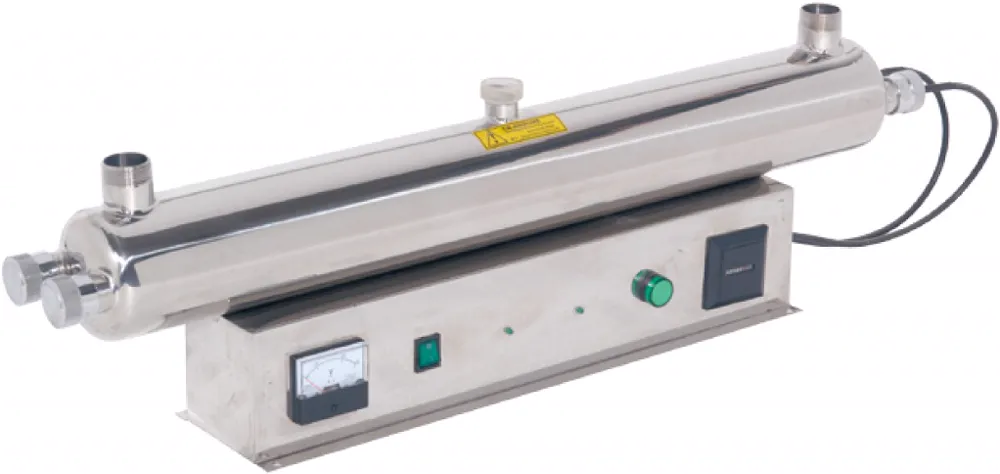
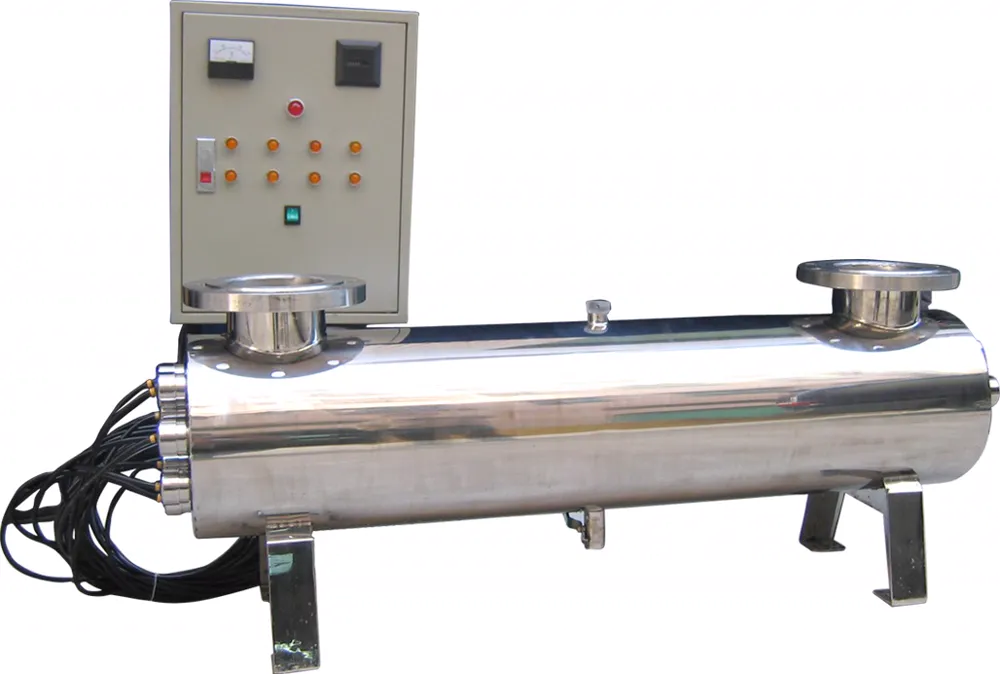
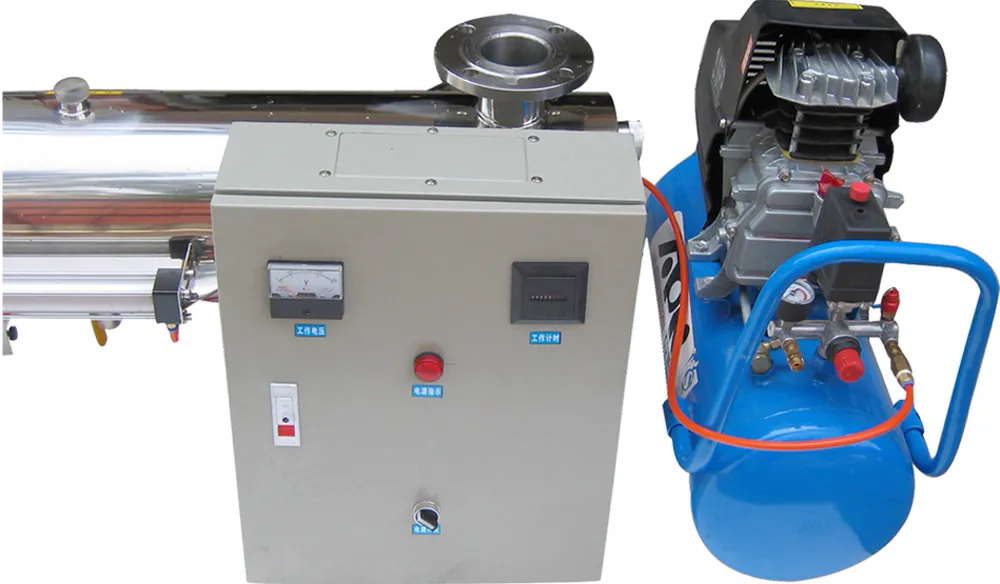
Stainless enclosure for hygienic rooms and corrosive environments.
Cost-efficient painted enclosure for general plant rooms.
Online dose monitoring with alarm thresholds.
PLC-based automatic operation and status indication.
Polished 304/316L chamber designed for full lamp exposure.
In-line quartz wiping keeps UV output stable between shutdowns.
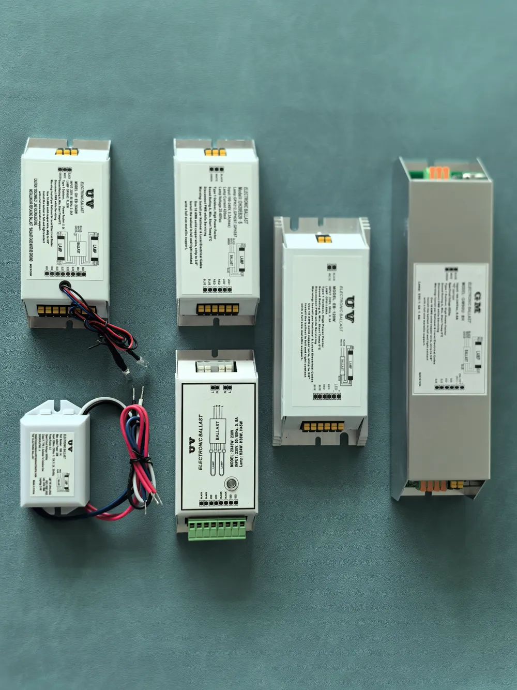
Stable lamp drive with wide input tolerance.

Imported and top-tier domestic UV lamp brands.
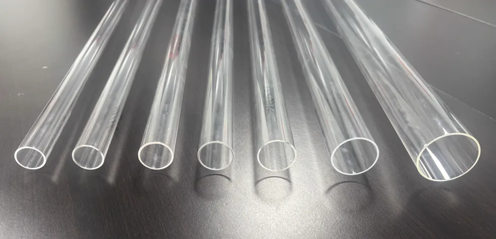
High-purity quartz sleeves maintain UV transmission.
Not every component is standard on every model — each KCF system is configured to the actual water quality and duty.
| Model | Flow (m³/h) | Lamp power | Chamber L×W×H (mm) | Connection |
|---|---|---|---|---|
| KCF-80W | 4.5 | 40 W × 2 | 920 × 114 × 280 | DN32 (1¼") |
| KCF-120W | 8 | 40 W × 3 | 920 × 159 × 320 | DN40 (1½") |
| KCF-160W | 12 | 40 W × 4 | 920 × 220 × 380 | DN50 (2") |
| KCF-200W | 15 | 40 W × 5 | 920 × 220 × 380 | DN50 (2") |
| Model | Flow (m³/h) | Lamp power | Chamber L×W×H (mm) | Connection |
|---|---|---|---|---|
| KCF-240W | 20 | 120 W × 2 | 1320 × 220 × 450 | DN65 (2½") |
| KCF-720W | 60 | 120 W × 6 | 1320 × 300 × 580 | DN125 (5") |
| KCF-1200W | 100 | 120 W × 10 | 1320 × 400 × 700 | DN150 (6") |
| KCF-2560W | 200 | 320 W × 8 | 1700 × 400 × 700 | DN225 (8") |
| KCF-4800W | 400 | 320 W × 15 | 1700 × 500 × 900 | DN250 (10") |
| KCF-7200W | 600 | 320 W × 22 | 1700 × 600 × 1060 | DN350 (14") |
Partial specification sheet — the full data set is supplied with quotations. Base configuration: high-output UV lamps, high-transmission quartz sleeves and stable electronic ballasts; UV intensity monitoring, automatic wiping and PLC control are configured per duty. Ratings reference clean water at the stated conditions.
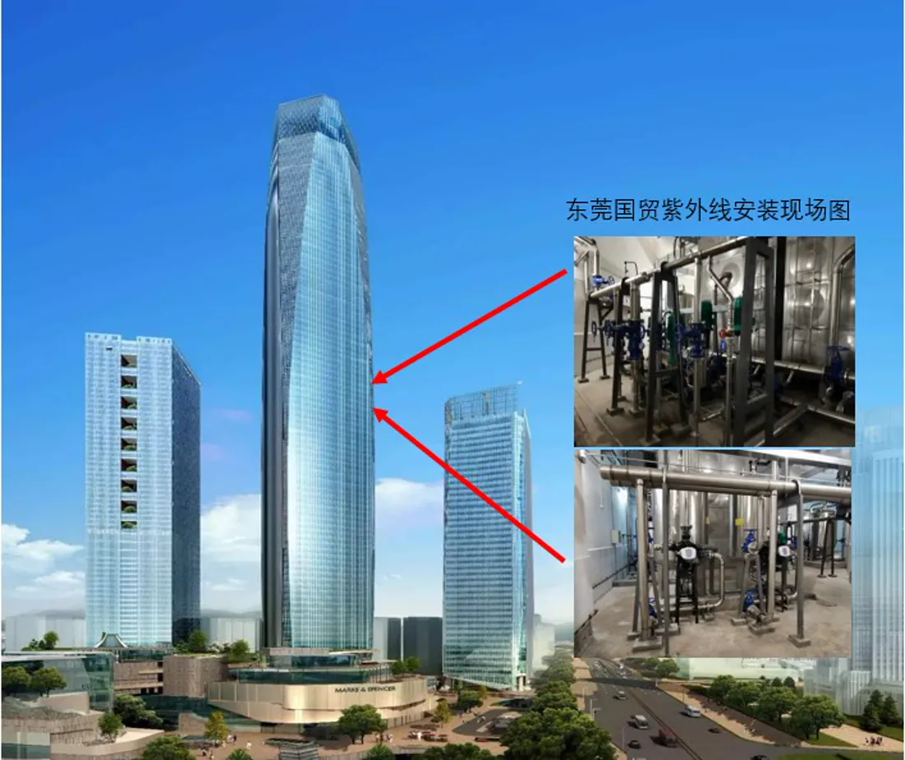
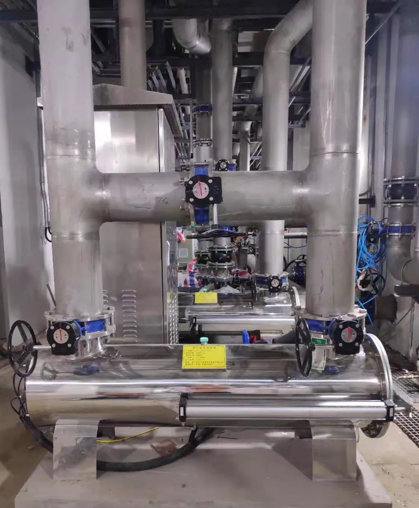
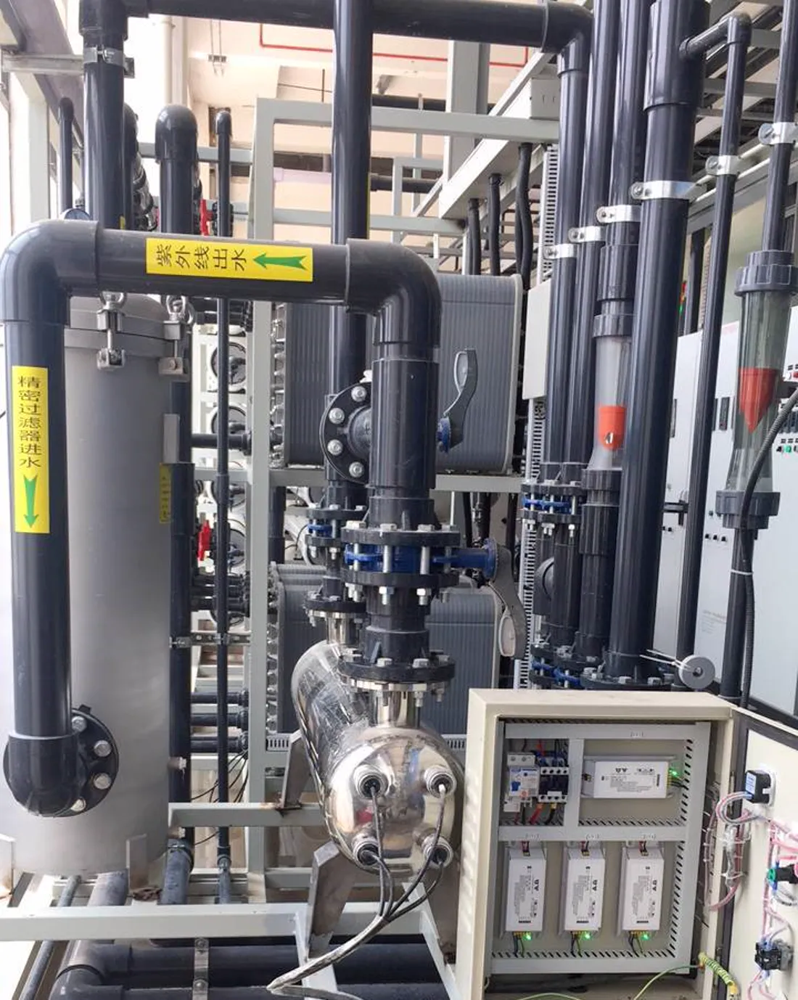
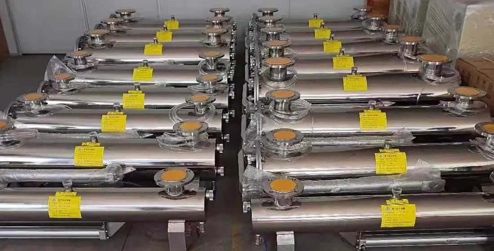
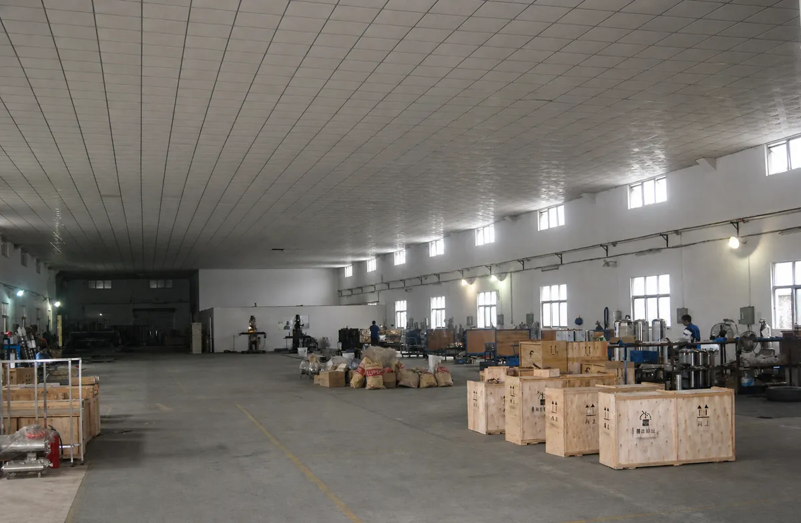
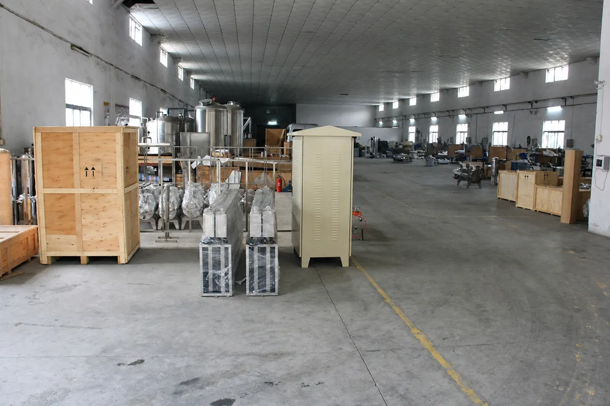
UV lamps, ballasts, reactor chambers and complete KONCHE water-treatment systems are assembled in our own workshops.
Same-caliber comparison of the four disinfection approaches in this category. Every value is a reference range documented on the linked product page and applies to the stated conditions, not a project guarantee.
| Comparison dimension | Low-pressure UV | Medium-pressure UV | TOC UV | Ozone |
|---|---|---|---|---|
| Output | 254 nm germicidal | Broad-spectrum 200–400 nm | 185 nm + 254 nm dual wavelength | Ozone generated from air or oxygen |
| Power / output class | High-intensity low-pressure lamps | 2–10 kW | Dual-wavelength UV lamps | 1–200 g/h |
| Typical flow | 4.5–600 m³/h | 4.5–600 m³/h | Ultrapure-water loops | Duty-dependent |
| Documented performance | Up to 99.99% microbial inactivation in suitable conditions | Large-flow disinfection | TOC toward 0.5 μg/L | Sterilization, COD reduction, decolorization, odor control |
| Best duty | Routine disinfection of process and drinking water | Large flows or challenging water | TOC control in ultrapure-water loops | Oxidation duties and pure-water storage disinfection |
| Limitations to plan for | No chemical residual; lamp count grows with flow | Higher power draw; more complex lamp handling | Ultrapure-water applications only | Contact time and tail-gas destruction required; material compatibility checks |
Decision guidance: For routine disinfection at everyday flows, low-pressure UV is the economical choice. Medium-pressure UV covers large flows and challenging water with fewer lamps. TOC UV belongs inside ultrapure-water loops where trace organics matter, and ozone handles oxidation duties such as COD reduction, decolorization and odor control. KONCHE confirms the technology against flow, transmittance and the target standard during proposal review.
Reference values verified against the linked product pages · Updated 15 August 2026
Send your flow rate and water-quality information to Konche for industrial UV water sterilizer selection.
Get Expert Support ↗